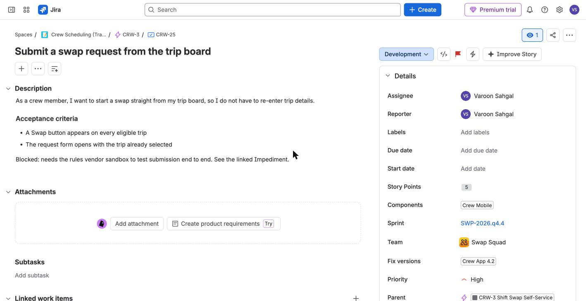

Module 5 of 8 · Session 2 · Connect Jira to code and Claude
Connect Jira to Git and verify traceability
A code change that doesn't carry the right key is invisible to the release review. Learn how the connection works, then find the commit that went to the wrong item and the fix that went nowhere.
45 min20 min practiceLab: Restore a missing code link
Objective
Explain the connection setup and trace a development change to the correct Jira work item.
Approved Git provider
Integration permissions
Repository selection
Synchronization
Keys in branches, commits and pull requests
Development panel
Missing keys
Wrong records
Restricted repositories
Related app context
Why this matters for the release reviewThe Crew App 4.2 review asks one question of the code: is every change that ships tied to work someone accepted? A change with no key is untested scope nobody can see. A change with the wrong key makes a finished item look busy and an unfinished one look quiet. Either way, the people deciding read the wrong story.
M5.1 How code activity reaches a Jira item
Jira never reads your repository by itself. An integration app sits between your organization's approved Git provider and one Jira site. For GitHub that's the GitHub for Jira app; GitLab and Bitbucket have their own equivalents. The app watches branch names, commit messages and pull request titles for Jira keys such as CRW-25, then sends what it finds to the matching work item. Jira shows it in the item's Development area: branches, commits, pull requests, and builds or deployments if CI is connected too.
Developer pushes a branch, commit or PR with a key→Git provider→Integration app (events + backfill)→Connected Jira site→Development panel on the matching item
Three things follow from that path, and every traceability problem in this module comes back to one of them:
The key is the only join. The app doesn't guess. No key, no link. Wrong key, wrong link.
Only what the connection can see gets sent. A repository that isn't included in the connection, a branch that was never pushed, or a sync that hasn't caught up all look the same in Jira: nothing.
Jira decides who sees it. Development information shows to people who hold the View Development Tools permission in that space. Opening the branch or pull request itself still needs access in the Git provider.
Who sets the connection up
This is not something a learner switches on. In most organizations it spans three owners, and the outline asks you to know who they are so you can route a problem to the right one.
Step
What happens
Usual owner
Approve the provider and app
Security and app review: which Git provider, which integration app, what data it may send to Jira.
App owner with the Jira org admin
Install the app in Jira
The app is added to the Jira site from the Marketplace or the provider's install flow.
Jira site admin
Connect the Git organization
The Git organization (or group/workspace) is linked to this Jira site. A second Jira site needs its own connection.
Git organization owner
Select repositories
"All repositories" or "only selected". A restricted or newly created repository is excluded until someone adds it.
Git organization owner / repository owner
Backfill and ongoing sync
On connect, the app backfills history; after that, events from each push arrive within minutes. The connection page shows sync status and lets an admin restart a failed backfill.
App owner
Who can see it in Jira
The View Development Tools space permission controls the Development panel and development JQL.
Jira admin / space admin
On the training siteNo Git provider is connected, and the GitHub for Jira app is not installed. Open CRW-25 ↗ and you'll find no branches, commits or pull requests: there is nothing connected to send them. That absence is itself a diagnosis you'll use in the lab (no connection, no activity). The practice runs on the replica repository below, built from the same CRW items, and the instructor demo uses a preconnected example from your platform or repository owner.
M5.2 Keys are the only join: naming conventions
Put the key where the app looks, in the form Jira uses. The same three places work across GitHub, GitLab and Bitbucket. For CRW-25 ↗ "Submit a swap request from the trip board":
Where
Convention
Example for CRW-25
Why
Branch
Key first, then a short slug. No spaces.
CRW-25-trip-board-swap
Links the branch the moment it's pushed, before any commit, so the panel shows work has started.
Commit
Key first, then what changed in the imperative.
CRW-25 Add Swap button to eligible trip cards
Each commit links on its own. Commits are linked by their message, not by the branch they're on.
Pull / merge request title
Key first, then the item's intent.
CRW-25 Submit a swap request from the trip board
The PR is what reviewers and the release review read. Its status (open, merged, declined) shows in the panel.
Use the uppercase key exactly as Jira shows it. Some providers don't match crw-25. Don't gamble on it.
One work item per branch. A branch that serves two items is usually two pieces of work. Commits may carry two keys when one change truly serves both, and it will then appear on both items.
A key that's only "related" still links if the app scans that text. Some providers also read PR descriptions. If you want to mention a related item without linking it, write it in words ("same symptom as the Alerts Squad email bug") or check your provider's rules first.
The key must belong to the connected site.CRW-25 on the training site and CRW-25 on another site are different items. The app sends to the site its organization is connected to.
Smart commits under the templateIf an admin enables smart commits, a commit such as CRW-25 #comment Ready for review or #time 1h writes to Jira as the committer (the commit email must match a Jira user). Transition commands such as #done move the item. Under the Golden Template, status changes through eQE Testing and PO Review are human decisions with exit criteria. Don't transition work from Git, and never use it to skip quality review: it shows in history and distorts cycle time.
Try it: key convention checker
Type a branch name, commit message or PR title. The checker runs the same tests a reviewer would. Your seat's READY story is CRP-? "Show swap eligibility before submitting": write the three names you'd use for it.
M5.3 Reading the Development panel, and what breaks it
When a provider is connected, the right-hand Development area on an item summarises what the app has sent: branches, commits, pull requests with their status, and builds or deployments if CI reports to Jira. Click a count to see the detail. A space's admin can also let people search it with development JQL (it only means something once a provider is connected):
project = CRW AND development[pullrequests].open > 0
project = CRW AND fixVersion = "Crew App 4.2" AND development[commits].all = 0
The second query is the release-review version of this module: items in 4.2 with no code at all. Some are legitimately code-free (a spike, a config change). Others had their commits land on the wrong key.
…atlassian.net/browse/CRW-25

CRW-25 is the item every commit in the practice repository claims to serve. Read its two acceptance criteria and the note "Blocked: needs the rules vendor sandbox to test submission end to end". That's your test for whether a commit belongs here: a commit that builds the submit path belongs to CRW-25; one that explains why a swap isn't eligible belongs to CRW-26.
Symptoms, causes and who to ask
What you see
Most likely cause
Check
Route to
No development activity on any item in the space
No provider connected to this site, or you lack View Development Tools
Ask a colleague with the same role; check the space's permissions page if you can see it
Jira admin / app owner
One commit missing, others fine
Missing, wrong or lowercase key; commit not pushed
Read the message in the repository; check it's on the remote
You (fix the reference)
Nothing from one repository
Repository not selected in the connection, or restricted
Compare with another repository in the same organization
Git organization or repository owner
Activity appears late or not at all after a push
Sync lag or failed backfill
Wait a few minutes; the app's connection page shows sync status
App owner
Activity on the wrong item
Wrong key in the message. Jira can't unlink it: the panel mirrors the repository.
Find the commit SHA and its real item
You and the repository owner (agree how to record it)
Counts show in Jira but the link won't open
Restricted repository: you lack access in the provider
Try opening the repository directly
Repository owner
Related app context: design linksThe same governance applies to other development context. A design tool integration such as Figma for Jira adds a design link and preview to an item, so the developer, the eQE engineer and the PO look at the same screen. It needs app approval, a connection, and viewers who can open the design file. It isn't installed on the training site either; when it is, check the design link is on the work item (CRW-25), not just on the epic, so the reviewer of the PR can find it.
Golden Template diagnosisTraceability fails quietly in the same ways a board filter does. Look at CRW-29 ↗ "Swap request shows the wrong home base": it's in sprint SWP-2026.q4.4 and Crew App 4.2, but it has no Team, so it never appears on the SWP sprint board. If its fix also lands without a key, the item is invisible on the board and in the code. That's exactly the trap in the practice repository.
M5.4 The practice repository
The replica below shows a practice repository, crew-swap-service, as the Swap Squad left it on Friday. Its branches, commits and pull requests reference real CRW items. Your job in the lab is the job a delivery lead or engineer does before a release review: decide whether each piece of activity is linked to the right work, then correct what you're allowed to correct.
Practice replicaGit isn't connected to the training site yet, and the GitHub for Jira app isn't installed. This replica uses the same CRW records (CRW-24, CRW-25, CRW-26 and CRW-29) and behaves like a connected provider: the Development panel on the right rebuilds itself from the keys in branch names, commit messages and PR titles. When your organization's provider is connected, repeat the same checks on a disposable repository.
git · crew-swap-service · practice repositoryPRACTICE REPLICA
Pull requests
Branches
Commits (newest first) · classify each one
Corrections you could make
Choose an action to see whether the practice repository permits it and what it does to the Development panel.
Development panel (as Jira would show it)
Instructor demo · 10 min
Run this with the platform or repository owner on the call, using your organization's approved provider and a preconnected example. If the live connection fails, switch to the preconnected example and keep going: the teaching point is the trace, not the install.
Show the connection, don't build it. Open the integration app's connection page with the owner: connected Git organization, which repositories are selected, and the sync or backfill status. Point out that "only selected repositories" means a new repository is invisible until added.
Show the permission. Open the space's permission scheme (or a screenshot) and find View Development Tools. Say who holds it.
Create a branch with a sandbox key. On the disposable repository, create CRP-NN-eligibility-hint from your instructor seat's READY story (never a CRW key: CRW is the read-only reference). Commit CRP-NN Show eligibility before submit, push, and open a PR with the same key in the title.
Verify in Jira. Refresh the seat item. Show the branch, commit and PR counts in the Development area. Click through to the PR.
Break it on purpose. Push one more commit with no key. Show it doesn't appear. Ask the room: "Which item does this change belong to, and how would anyone know?"
Show the release-review view. Show development JQL on the connected example (for instance PRs still open on a release). Then open CRW-25 ↗ on the training site and show there's nothing connected: the same question, answered "no evidence".
LAB M5 · 20 MIN · CRW READ-ONLY · YOUR SEAT
Restore a missing code link
Turbulence
Brief The Crew App 4.2 review is next week. The Swap Squad's repository has an open PR for CRW-25 and a quick fix someone pushed for the ORD home-base complaint. The release lead asks you: "Is every change on these branches traced to the right Jira item? If not, fix what you're allowed to fix and tell me what to check if it still doesn't show." CRW is read-only: you read CRW-25, CRW-26, CRW-29 and KAN-4 but never edit them. Your only Jira write is a comment on your own seat story CRP-? (label lab-{SEAT}, summary prefix L{SEAT} · ). Repository changes happen in the practice replica.
Inspect the seeded activity (7 min).
In the replica, read the two pull requests, the branches and the commit list. Note the files each commit touches.
Open the items the activity claims to serve, read-only: CRW-25 ↗, CRW-26 ↗, CRW-29 ↗ and the service request KAN-4 ↗. Compare summaries, acceptance criteria and descriptions with what each commit actually changes.
Classify every commit in the replica (correct key, missing key, wrong key, not pushed yet) and press Check my classification. Write down the SHA of the commit with no key and the commit with the wrong key, and the item each one really belongs to.
Correct the permitted reference and verify (8 min).
In Corrections you could make, try the actions. Some are permitted, some rewrite shared history, and one targets the wrong item. Read each response.
Apply a permitted correction for the missing key, and the permitted handling for the wrong key. Then switch the Development panel between CRW-25, CRW-26 and CRW-29 and confirm what each now shows. Note what you can't fix from Jira.
In the key checker, write the branch, commit and PR title you'd use for your seat story CRP-?, until all three pass.
Open your Lab {SEAT} backlog ↗, open CRP-? and add one comment: the three names you'd use, plus "Git not connected on the training site: link verified in the practice replica." That's your documented trace.
Explain the next check (5 min).
Use the "still not showing" diagnosis below for this case: the PR title now carries the key, but CRW-29 still shows nothing in a real connected site.
Record the check you'd make, what evidence you'd hand over (repository, SHA, key, push time) and the owner you'd route it to.
key in (CRW-25, CRW-26, CRW-29) ORDER BY key ASC
project = CRP AND labels = lab-{SEAT} AND updated >= -1d ORDER BY updated DESC
project = CRW AND updated >= -1h ORDER BY updated DESC
Diagnosis: the key is right, but the activity still doesn't appear
Debrief: what a strong answer looks like
The wrong key. Commit c58f210 "CRW-26 Post the swap request when Submit is pressed on a trip card" changes api/swaps/submitFromTrip.ts. That's CRW-25's work (submit a swap request from the trip board). CRW-26 "Show why a swap is not eligible" is about the ineligibility message. The commit is pushed and part of open PR #41, so don't amend or force-push: that rewrites history everyone else has pulled. Leave it, make sure PR #41's title carries CRW-25 (it does), and record the mis-link: in a real team, a short note on CRW-26 naming the SHA and its real item; in class, your evidence card. CRW-26's panel will keep showing one stray commit. Jira can't unlink it, and the release review should know why.
The missing key. Branch fix/home-base-lookup, commit 3f8a6d1 "Read home base from the crew profile, not the trip" and PR #42 "Fix home base lookup for ORD crew" carry no key at all. KAN-4 says an ORD-based flight attendant saw DEN as her home base; CRW-29 is the delivery item it was handed to. So the work is CRW-29, not CRW-62. CRW-62 is the Alerts Squad's email bug with the same symptom: mention it in words in the PR description so both teams retest, but don't link the work to it. The permitted fix is to edit PR #42's title to CRW-29 Fix home base lookup for ORD crew (and optionally rename the branch to CRW-29-home-base-lookup). The PR, and the branch if renamed, then appear on CRW-29. Commit 3f8a6d1 itself stays unlinked: be honest about that in your note.
The local commit.9be04d7 "CRW-25 Show a spinner while the request submits" has the right key but was never pushed. It will never appear in Jira until it is. Push it; don't re-key it.
Bonus finding. CRW-29 has no Team, so even with the PR linked it's invisible on the SWP sprint board and outside its reports. Raise it with the Swap Squad's Scrum Master; it's a data-quality gap the release review will otherwise miss.
If the key is right and it still doesn't show: check in order (1) the change is pushed, (2) the repository is included in the connection, (3) sync or backfill has completed since the push, (4) a colleague with the same role can see it (if they can, it's your View Development Tools permission or provider access). Hand the owner the repository, SHA, key and push time. Repository selection goes to the Git organization owner, sync failures to the app owner, Jira permissions to the space or Jira admin. You never install or reconfigure the app yourself.
Learner output · Module 5
A Jira item with matching development activity, or a documented diagnosis using the captured example.
+450 mi
Checkpoint
1. A developer pushes commit Read home base from the crew profile with no key, inside a PR titled the same way. What does the Development panel on CRW-29 show?
There's no fuzzy matching. The key is the only join, so a change with no key is invisible to Jira, and to anyone reviewing the release from Jira.
2. A pushed commit in an open PR says CRW-26 … but the change belongs to CRW-25. What's the permitted handling?
Rewriting pushed, shared history breaks everyone who pulled it, and Jira can't unlink a commit: the panel mirrors the repository. Correct the parts you can (PR title, branch), and document the rest.
3. A colleague in the same role sees branches and PRs on CRW-25; you see no Development activity at all. What's the most likely cause?
If the data reached Jira for your colleague, the connection, the push and the key are fine. What differs is who's looking.
4. Which branch name follows the course convention for CRW-25?
Uppercase key exactly as Jira shows it, first, no spaces, one item per branch. "crw25" isn't a key at all, and a branch for two items is usually two pieces of work.
5. Someone suggests the smart commit CRW-25 #done to save the PO a click before the review. What's the right response?
The email match makes it work; it doesn't make it right. A Git-driven "done" also creates a fake, ultra-short cycle time.